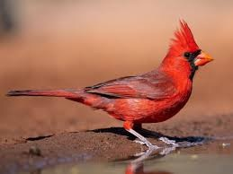

El cardenal es un ave conocida por su plumaje rojo brillante y su canto melodioso. Habita en bosques, jardines y zonas arboladas.

El cardenal es símbolo de alegría en muchas culturas y suele verse durante todo el año.